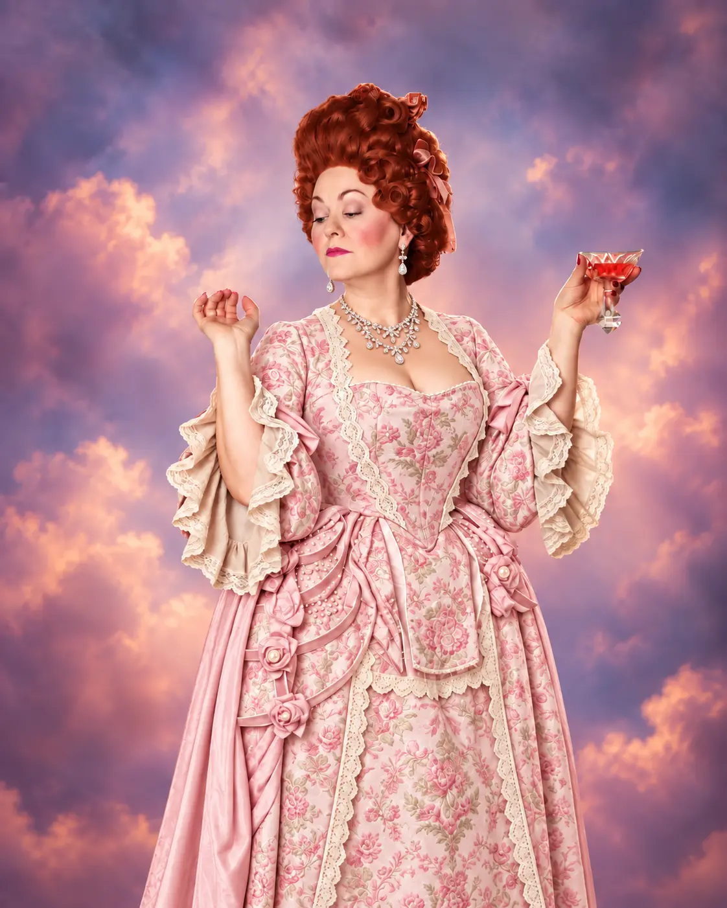
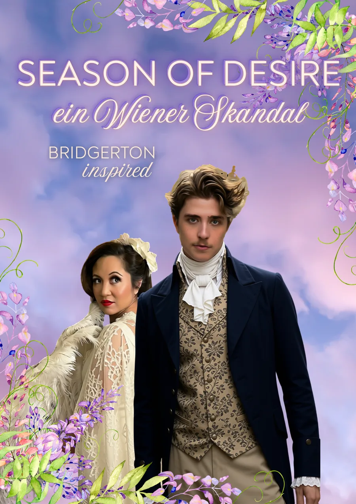
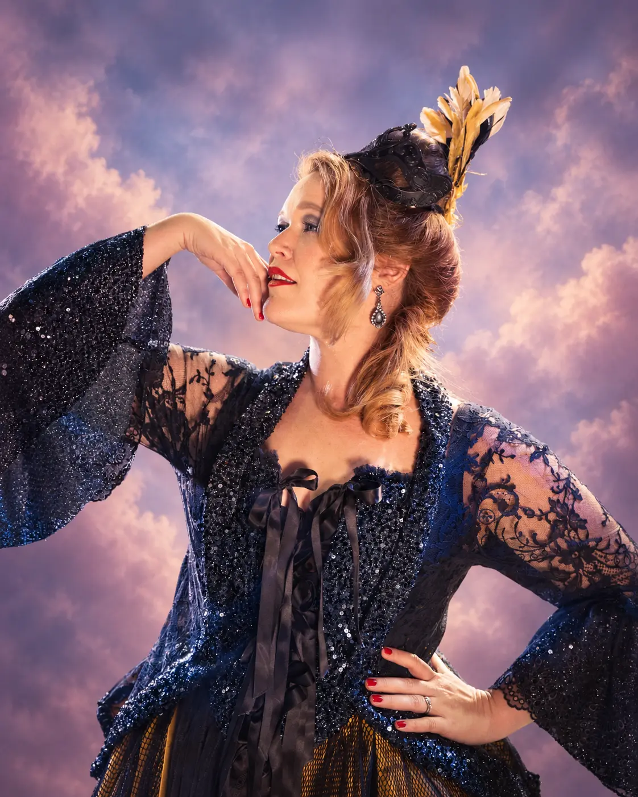
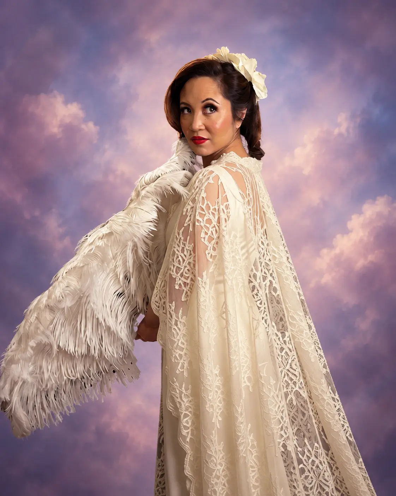
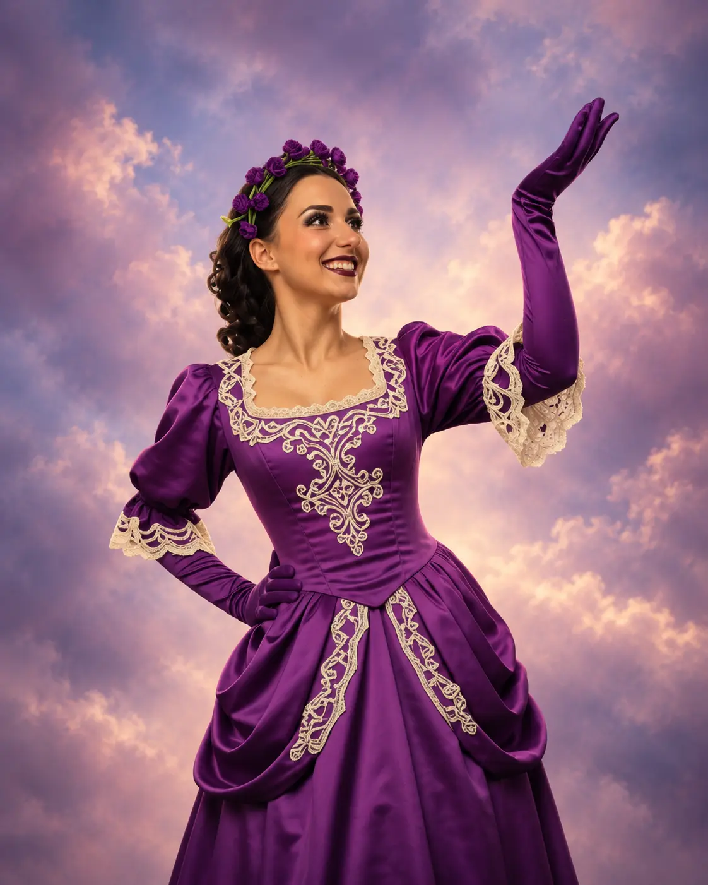
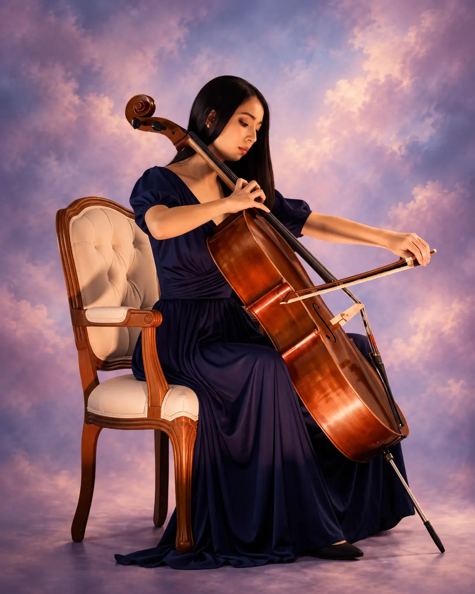

Rebecca Greenstein
Duchess Aurelia von Hohenberg
Die Gastgeberin, deren Einfluss weit über den Ballsaal reicht.
A Viennese scandal
Ein Wiener Skandal – Bridgerton inspired.

Die Geschichte
Ein Wiener Skandal – Bridgerton inspired.
In einer Gesellschaft, in der jedes Wort eine Waffe und jede Berührung ein Versprechen ist, entzündet sich ein Liebesdreieck. Ein prunkvoller Ball wird zur Bühne für Intrigen, Sehnsucht und Entscheidungen, die niemand ungeschehen machen kann.
Pop trifft Klassik, große Stimmen treffen Luftakrobatik und opulente Kostüme treffen Wiener Theatralik. Season of Desire ist romantisch, sinnlich und dramatisch – mit dem modernen Puls unter der historischen Oberfläche.
Termine 2026 / 27
Auf der Bühne
Sieben Figuren, sieben Geheimnisse – und ein Ball, bei dem jeder Blick etwas bedeutet.

Die Gastgeberin, deren Einfluss weit über den Ballsaal reicht.

Klug, begehrt und niemals so berechenbar, wie es scheint.

Anmut, Ehrgeiz und ein sorgfältig gehütetes Geheimnis.
Ein Gentleman zwischen Pflicht, Verlangen und Skandal.
Charmant, gefährlich und immer einen Schritt voraus.

Die Beobachterin am Rand – und vielleicht die wichtigste Figur.

Eine junge Frau, die mehr Türen öffnen kann als erwartet.
Season of Desire · FAQ
„Season of Desire" ist eine Bridgerton-inspirierte Bühnenshow von Vien.noir im Das Vindobona in Wien. Im Zentrum steht Lady Arabella Fairmont, die sich während der Wiener Saison zwischen Verlangen und Pflicht entscheiden muss – ein Ball, ein Liebesdreieck und eine Gesellschaft, in der jedes Lächeln eine Absicht verbirgt. Die Inszenierung verbindet Live-Gesang, Luftakrobatik und sinnliche Theatralik, Pop trifft auf Klassik: Bridgerton-Atmosphäre, erzählt mit Wiener Handschrift.
Season of Desire ist von Bridgerton inspiriert, aber keine offizielle Netflix-Produktion und keine Nachspielung der Serie. Wir erzählen eine eigene Geschichte in derselben Welt aus Ballsaal, Gerüchten und Gesellschaftsdruck – mit Regency-Kostümen, Live-Gesang und Luftakrobatik. Wer die Stimmung von Bridgerton mag, ist hier genau richtig.
Nein. Die Handlung um Lady Arabella Fairmont ist in sich abgeschlossen und funktioniert ohne Vorkenntnisse. Bridgerton-Fans entdecken aber zahlreiche Anspielungen auf das Setting, die Etikette und die Musiksprache der Serie.
Nein. Die Bridgerton-inspirierte Show ist eine reine Bühnenshow, kein Dinner-Arrangement – das Ticket umfasst ausschließlich die Vorstellung. Essen und Getränke können Sie unabhängig davon im Restaurant des Vindobona bestellen, das eine Stunde vor Showbeginn öffnet.
Für die Bridgerton-inspirierte Show sind drei Termine angesetzt:
Einlass und Gastronomie starten um 18:30 Uhr, die Vorstellung beginnt um 19:30 Uhr. Wir empfehlen, rechtzeitig zu kommen – die Plätze werden bei der Ankunft zugewiesen.
Im Das Vindobona, Wallensteinplatz 6, 1200 Wien.
Tickets erhalten Sie über vindobona.wien. Die Theaterkassa des Vindobona ist mittwochs von 14:00 bis 18:00 Uhr sowie an Vorstellungstagen (Mo–Sa) von 17:30 bis 19:00 Uhr erreichbar, telefonisch unter +43 1 512 39 03 (Durchwahl 2).
Das Vindobona ist bestuhlt und vergibt vier Kategorien:
Die konkrete Platzzuweisung innerhalb der Kategorie erfolgt bei der Ankunft.
Ja. Das Restaurant im Vindobona öffnet eine Stunde vor Showbeginn. Bestellungen, die bis 19:00 Uhr aufgegeben werden, servieren wir noch vor der Vorstellung – alles danach kommt in der Pause an den Tisch.
Ja, die Vorstellung hat eine Pause. In dieser Zeit werden auch später aufgegebene Bestellungen aus dem Restaurant serviert.
Für alle, die einen Abend zwischen Oper, Varieté und Pop suchen: Bridgerton-Fans, Freundinnen- und Paarabende, Geburtstagsrunden und Firmenfeiern, die mehr wollen als ein Konzert. Die Show ist auf Deutsch gespielt, einzelne Songs werden in der Originalsprache gesungen.
Vien.noir presents